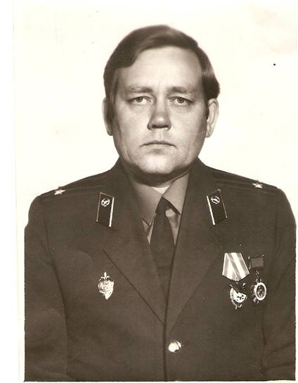

Чурин Владимир Васильевич
(23.07.1949)
Родился в селе Нюксеница Вологодской области в многодетной семье. Его отец, Василий Михайлович, авторитетный на Вологодчине журналист, был направлен в Кичменгский Городок на должность редактора газеты «Заря Севера».
В 1966 году Владимир Васильевич Чурин окончил Кичменгско – Городецкую среднюю школу. В 1967 году поступил на заочное отделение юридического факультета Ленинградского государственного университета им. А.А. Жданова, который закончил в 1973 году.
Трудовую деятельность начал в 16 лет, сразу же после окончания средней школы: работал на сплаве древесины, в редакции районной газеты и в районном народном суде. В 1968 году был приглашен на работу в районную прокуратуру, где проработал следователем до 1972 года.
В январе 1972 года был избран первым секретарем райкома ВЛКСМ, а в июне 1974 года направлен на службу в органы государственной безопасности. В 1979 году с должности начальника Великоустюгского городского отделения КГБ поступил учиться в Высшую школу КГБ СССР (ныне Академия ФСБ России) на факультет подготовки руководящего состава.
В 1981 году, получив высшее специальное образование со знанием персидского языка, был направлен советником в Республику Афганистан, где находился до 1985 года.
В 1992 году В.В. Чурину присвоено воинское звание генерал-майора.
В августе 1997 года В.В. Чурин уволился из органов госбезопасности и возглавил Управление безопасности и защиты информации Главного управления Банка России по Вологодской области. Указом Президента Российской Федерации в 2007 году на второй срок назначен представителем Президента РФ в квалификационной коллегии судей Вологодской области. Является инициатором издания и одним из авторов книги «Вологжане в «горячих точках» планеты». Принимал активное участие в издании книг: «Генералы и адмиралы Вологодчины», «Герои Вологодчины».
Награжден орденом Красного Знамени, орденом Почета, Дружбы народов (ДРА), различными медалями, знаками «За службу в контрразведке», III степени, «Почетный сотрудник контрразведки» и другими наградами. Поддерживает тесную связь с Кичменгско – Городецким районом.